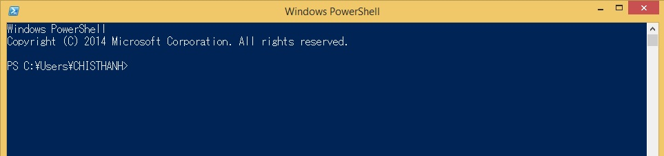
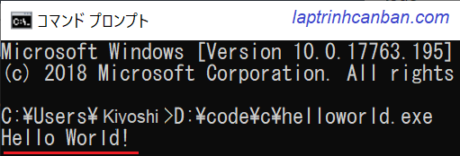
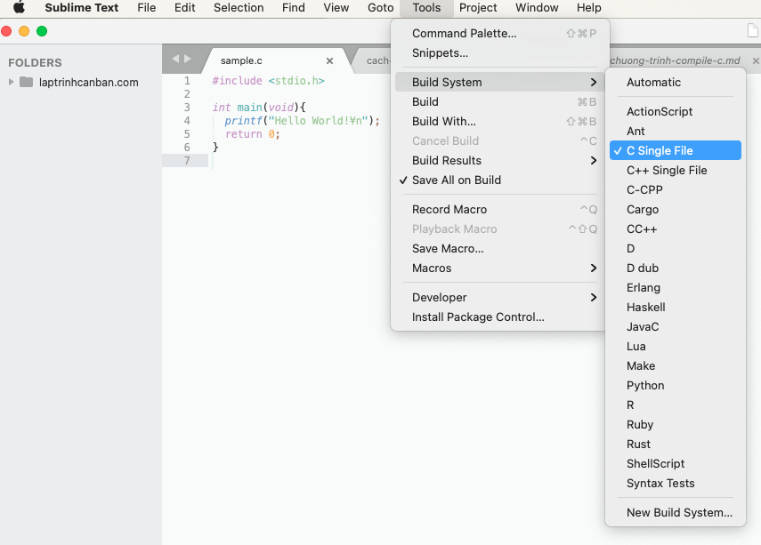
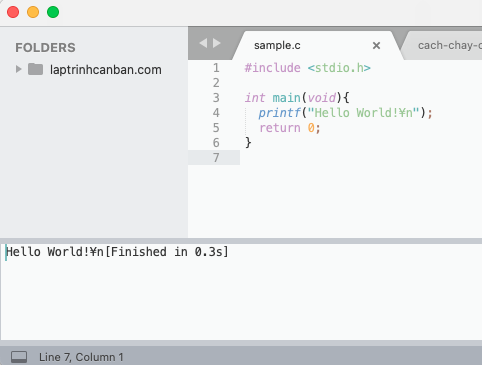
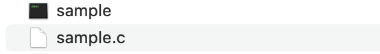

Trong bài này, chúng ta sẽ cùng tìm hiểu bốn cách chạy chương trình C trên bốn chương trình tạo môi trường lập trình chương trình C phổ biến hiện nay.
Để chạy được chương trình C, bạn cần một phần mềm tạo môi trường lập trình chương trình C để chúng ta có thể nhập code chương trình C và chạy nó. Có rất nhiều chương trình tạo môi trường lập trình chương trình C, bạn có thể lựa chọn một trong số chúng dưới đây.
Chạy chương trình c bằng cmd
Môi trường lập trình C chạy trên cmd
Command Prompt có tên khác là cmd, là chương trình sẵn có của windows giúp bạn chạy code chương trình C trực tiếp trên nền tảng DOS. Bạn có thể tham khảo cách khởi động Command Prompt tại Cách khởi động Command Prompt trên máy tính.
Tuy nhiên cmd chỉ giúp bạn chạy chương trình c, nếu bạn đã cài một trong các ứng dụng tạo môi trường lập trình C có thể chạy trực tiếp trên cmd mà thôi. Chứ bản thân cmd không tạo môi trường lập trình C.
Một trong số nhưng ứng dụng tạo môi trường lập trình C có thể chạy trên cmd có thể kể đến đó là:
- MinGW-w64 : Đây là một công cụ miễn phí tạo môi trường lập trình C/C++, giúp bạn có thể chạy C bằng cách compile file
.ccũng như chạy file được tạo ra trên nền tảng cmd. Bạn có thể tìm hiểu chi tiết cách cài đặt và sử dụng MinGW-64 tại bài viết dưới đây:
- C++ Compiler: Đây là cũng là một công cụ miễn phí tạo môi trường lập trình C/C++, giúp bạn có thể chạy C bằng cách compile file
.ccũng như chạy file được tạo ra trên nền tảng cmd. Mặc dù là miễn phí nhưng khi bạn download file thì cần phải ghi rõ thông tin cá nhân như điện thoại, địa chỉ v.v.., nên cũng hơi rắc rối một chút để lấy được file cài đặt. Các bạn có thể tìm hiểu thêm về C++ Compiler: tại embarcadero.com.
Ngoài ra bạn cũng có thể thay thế Command Prompt bằng Windows PowerShell. Cả hai phần mềm này đều cung cấp nên tảng DOS giúp chạy code chương trình C trực tiếp.

Chạy C bằng MinGW-w64 trên cmd
Để chạy một chương trình C bằng MinGW-w64 trên cmd, chúng ta sẽ tiến hành 3 bước sau đây:
Di chuyển thư mục làm việc đến thư mục chứa file
.ccần chạy.Biên dịch (compile) file
.cđó thành file.exeChạy file
.exevừa tạo.
Giả sử bạn có ffile helloworld.c chứa mã nguồn của chương trình C và có đường dẫn D:\code\c\helloworld.c với cấu trúc như sau:
D:\ ├---code ├ ├---c ├ ├--- helloworld.c
Để chạy được chương trình chương trình C được viết trong file này, sau khi khởi động Command Prompt, chúng ta cần di chuyển thư mục hiện tại về thư mục chứa file chương trình C cần chạy bằng lệnh cd/d <folder_path> như sau:
cd/d D:\code\c |
Sau đó, chúng ta tiến hành biên dịch (compile) file C đó bằng lệnh compile tuỳ theo chương trình tạo môi trường C sử dụng.
Ví dụ với MinGW-w64 chúng ta dùng lệnh compile sau:
gcc -o sample sample.c |
Nếu chương trình không lỗi và compile thành công, một file helloworld.exe sẽ được tạo ra.
Để chạy file này, chúng ta nhập trực tiếp tên file kèm đuôi file vào màn hình để chạy là xong.
helloworld.exe |

Chạy chương trình c trên visual studio code
Chạy C trên Visual Studio Code
Mặc dù có rất nhiều công cụ cũng như IDE miễn phí hỗ trợ chạy C/C++, nhưng không thể phủ nhận là Visual Studio Code vẫn có một sức hấp dẫn riêng khi dùng nó để chạy chương trình C.
Để có thể chạy chương trình c trên visual studio code, trước hết chúng ta cần phải cài đặt visual studio code cùng với các extension và phần mềm kèm theo như sau:
- Cài đặt visual studio code tại https://code.visualstudio.com/download
- Cài đặt extension dành cho phát triển C/C++ tại link visualstudio.com, hoặc là tìm kiếm trên thanh Extension view.
- Tải về và cài đặt phiên bản mới nhất của Mingw-w64 và thêm đường dẫn đã cài của Mingw-w64 vào biến môi trường Path. Tham khảo cách cài đặt và sử dụng tại Cài đặt môi trường lập trình C/C++ với MinGW-w64.
Sau khi đã cài đặt visual studio code, chúng ta sử dụng visual studio code để viết code chương trình C, và sau đó tiến hành compile cũng như chạy file exe đã được biên dịch trên Mingw-w64 với cú pháp sau đây:
gcc -o filename filename.c
Chạy C trên Visual Studio Community
Visual studio code là một Text Editor, do đó nó không tích hợp sẵn trình biên dịch hoặc trình thông dịch bên trong nó, nghĩa là muốn chạy được ứng dụng, bạn phải dùng riêng compiler bên ngoài. Đó là lý do bạn cần đến Mingw-64 giống như ở trên.
Do đó, có lẽ rằng so với sử dụng visual studio code thì bạn nên sử dụng Visual Studio Community vốn là một IDE tích hợp sẵn trình biên dịch hoặc trình thông dịch bên trong nó giúp bạn thực thi chương trình C tốt hơn. Visual Studio Community cho phép bạn tạo ra các Project với mã nguồn của C và chạy trực tiếp mã nguồn này, cũng như là cung cấp visual studio developer command prompt giúp bạn có thể compile và chạy file biên dịch của chương trình C trực tiếp bằng câu lệnh cl.
Sau khi cài đặt Visual Studio Community 2107 tại đường link https://visualstudio.microsoft.com/, chúng ta có thể khởi động visual studio 2017 developer command prompt và tiến hành biên dịch và chạy chương trình C với cú pháp sau đây:
cl filename.c
Chạy chương trình c trong sublime text 3
Để chạy chương trình C trong sublime text 3, chúng ta sẽ sử dụng đến chức năng Build đượct tích hợp sẵn trong Sublime Text 3. Cách làm thì rất đơn giản, bạn chọn Tools-> Build System->C Single File để chỉ định Sumblime Text 3 dùng Build System dành cho ngôn ngữ C, sau đó sau đó nhấn Ctrl + B để tiến hành complie và chạy file đó là xong.
Ví dụ, chúng ta sử dụng tới file hello.c đã được chuẩn bị trong bài Các viết và lưu chương trình trong C với mã nguồn như sau:
|
Sau khi mở file, chúng ta lựa chọn Build System là C Single File như sau:

Sau đó, chúng ta tiến hành compile và chạy file bằng cách nhấn Ctrl + B:

Kết quả, chương trình được chạy trực tiếp trong sublime text 3 với dòng kết quả được in ra ở phía dưới màn hình. Và, tại thư mục chứa file hello.c thì một file hello.exe cũng được tạo ra như sau:

Chạy chương trình c online
Chạy C online trên paiza.io
paiza.io là một trang web cung cấp nền tảng online chạy chương trình được viết bởi nhiều loại ngôn ngữ, trong đó có cả chương trình C. Nếu bạn chưa cài chương trình C lên máy tính của mình, thì việc chạy online trên website này cũng là một sự lựa chọn không hề tồi chút nào.

Chạy C++ online trên onlinegdb.com
onlinegdb.com cũng là một trang web cung cấp nền tảng online chạy chương trình được viết bởi nhiều loại ngôn ngữ, trong đó có cả chương trình C++. Đây cũng là một lựa chọn không tồn khi bạn muốn chạy code C++ online trên website này.
Chạy C++ online trên programiz.com
programiz.com cũng là một trang web cung cấp nền tảng online chạy chương trình được viết bởi nhiều loại ngôn ngữ, trong đó có cả chương trình C++. Đây cũng là một lựa chọn không tồn khi bạn muốn chạy code C++ online trên website này.
Chạy C online trên laptrinhcanban.com
Trong các bài hướng dẫn trong website Lập trình căn bản.com này, Kiyoshi cũng mạn phép dùng paiza.io như là một cửa sổ luyện tập online nhằm giúp các bạn ôn tập các kiến thức trong mỗi bài viết.
Cửa sổ Chạy Code Online hiện cũng đã được Kiyoshi tích hợp vào biểu tượng dấu code </> ở bên tay trái trong mỗi bài viết rồi, bạn hãy click vào để mở nó mỗi khi cần luyện tập code nhé.
Tổng kết
Trên đây Kiyoshi đã hướng dẫn bạn bốn cách chạy code chương trình C rồi. Để nắm rõ nội dung bài học hơn, bạn hãy thực hành viết lại các ví dụ của ngày hôm nay nhé.
Và hãy cùng tìm hiểu những kiến thức sâu hơn về chương trình C trong các bài học tiếp theo.
URL Link
https://laptrinhcanban.com/c/lap-trinh-c-co-ban/viet-chuong-trinh-c/cach-chay-chuong-trinh-c/
HOME › lập trình c cơ bản dành cho người mới học lập trình>>03. viết chương trình c